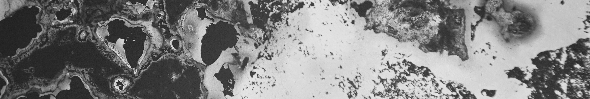

Ouahib Mortada et Lo Thivolle parlent de Mineurs

Un bouquet de fleurs derrière lequel tempête la résistance
Le générique achevé, des images reviennent sur l’écran. En pleine nuit, un groupe d’hommes traverse les rues désertes, scandant un hymne à leur ville, Jerada, dominée par sa montagne d’anthracite. Ville sinistrée depuis la fermeture de la mine, condamnée à voir ses enfants risquer leur peau dans des « descenderies » clandestines. Ville où naquit le syndicalisme marocain, où flambe encore la fierté ouvrière. Cette manifestation, repoussée hors du film, pourrait être la signature des mineurs posée aux côtés de celle du réalisateur Ouahib Mortada. Car il n’a cessé de nous faire entendre leur voix, tantôt fustigeant les ministres, tantôt prenant à partie le cinéaste : (guillemets) Va plutôt voir tous ceux qui dorment et se gavent de l’argent de tous ces pauvres. Apostrophe vigoureuse qui exige d’exposer les coupables plutôt que les victimes, de démasquer l’imposture du monstre afin d’y reconnaître nos humaines turpitudes. À ce risque qu’il y a à démêler l’écheveau des responsabilités, à tourner la caméra vers les puissances de nuire, Ouahib Mortada préfère le courage de l’orateur, dont la ‘parole agile transperce l’esprit’, comme un ‘bouquet de fleurs derrière lequel tempête la résistance.’1.
Le film Mineurs a été réalisé au sein du collectif Numer0 Zer0. Pourquoi ce choix ?
Ouahib Mortada Si nous avons choisi avec Numer0 Zer0 de travailler ensemble à faire du cinéma, c’est pour créer d’autres sens. Ce n’est possible qu’en arrêtant de suivre toujours les mêmes chemins. C’est pourquoi ce film qui au départ n’avait aucunement l’intention d’appartenir à un genre ou une forme particulière (enquête, reportage, archive…) est devenu peu à peu un essai.
Lo Thivolle Quand nous nous sommes rencontrés avec Caroline Beuret et Ouahib Mortada, en 2008, Ouahib portait seul le projet du Polygone étoilé, ce cinéma international de quartier situé à La Joliette à Marseille. Nous n’avions pas fait d’école et il nous était nécessaire d’apprendre en faisant, auprès de gens qui avaient une certaine expérience, mais surtout avec qui nous avions des affinités, Jérémy Gravayat et David Yon. Un collectif s’est mis en place. Depuis, au Polygone étoilé, nous proposons des ateliers, des projections et des résidences. Numer0 Zer0 est à notre image : il nous permet de défendre l’autoproduction et Dérives.tv l’autodiffusion.
OM Nous nous sommes associés avec DocMa au Maroc pour défendre les intérêts de futurs projets documentaires dans notre région. La production du documentaire au Maroc a beaucoup progressé en quantité et en qualité au cours des dix dernières années. Pourtant, le documentaire reste le parent pauvre du métier de cinéaste. Nos parcours sont semés d’embûches de toutes sortes qui entravent l’aventure filmique. Il est impossible d’obtenir les autorisations de tournage quand notre projet se fait hors du cadre des commandes télévisuelles ou de structures de production et de diffusion officielles. Sans parler de la rareté des fonds engagés pour la préproduction. Les frais sont généralement assumés par les cinéastes du début à la fin. Il faut être doublement fou pour s’atteler à cet exercice. Mais comme le disait Audiard : « Il n’y a que les fêlés qui laissent passer la lumière. »
Même en autoproduction, on ne peut pas être à tous les endroits de la chaîne. Je suis auteur du film. Lo et Caroline m’ont accompagné toutes ces années pour que je reste fidèle à mon idée de départ. Les premières images datent de 2004. J’ai montré certains de ces rushes au Polygone étoilé. Je traduisais au fur et à mesure en français ce qui se disait en arabe, pour que le public comprenne ce qui se tramait dans chaque séquence. J’ai continué à filmer jusqu’en 2009. En 2016, nous avons eu une bourse pour une résidence de montage à Béjaïa. Caroline et moi avons repris cet accompagnement des images par ma voix, ce passage entre l’arabe et le français. Je pense en arabe et écris en français, réfléchis en français et traduis en arabe… C’est dans cette torsion que se produit le langage documentaire. Cette première mouture du montage m’a convaincu de porter mon choix sur une version originale en arabe.
Votre langue marocaine chemine côte à côte avec l’image, pour évoquer un mouvement incessant de recherche et de retours - un retour dans votre enfance, vos retours à Jerada. Elle porte une histoire, un imaginaire. Le choix de passer par le conte est-il lié à cette histoire ?
OM La langue est une frontière solide. Comme d’autres cinéastes, je dois travailler ma langue d’origine pour qu’elle parle autant à des francophones qu’à des arabophones. Un mot mal placé peut suffire pour que moi, marocain, soit mal compris d’un algérien. Au contraire, le conte a permis depuis longtemps aux gens de se rassembler, même s’ils parlaient des dialectes différents. En se jouant de la langue, le conteur trouve le moyen de se faire comprendre. Pour traduire les émotions que l’on a en traversant ce village, même si chaque génération dit des choses différentes, le conte parle à tout le monde, et les générations s’accordent.
LT Dans tout conte, il y a un fondement réel qui permet de revenir au tout début de notre histoire. Le mythe de Ben-Nes-Nes, qui faisait peur à Ouahib enfant, traverse l’inconscient collectif. Lorsque les grands-mères racontent : (guillemets) cette montagne est dangereuse, si vous y allez un monstre va mutiler vos bras, vos corps. N’y allez pas ! ; ce monstre, il n’existe pas et en même temps, il existe.
OM Avant la fermeture de la mine officielle, la loi travail n’autorisait pas le travail des enfants, mais aujourd’hui certains travaillent à partir de 12 ans.
Mineurs permet de prendre conscience de la dureté d’ « aller au charbon ». L’image fortement contrastée, parfois en faible définition, tremble, saute, comme si elle subissait la chaleur, la poussière, les sursauts de la terre. Comment ce choix est-il né ?
OM Si j’écris comme je parle, je filme comme je me déplace, dans un mouvement perpétuel. Je ne souhaite pas figer le cadre sur une réalité transparente ; la réalité est conflictuelle et contradictoire. En tournant, je devais capter cette ville dans son entièreté. Or, la charge émotionnelle liée à l’histoire de la mine fait que ses habitants ne raisonnent pas de la même manière que ceux qui ne connaissent pas son passé. La ville, alors, ne retient pas assez leur attention.
LT Caroline et moi avons été attrapés par cette rugosité de l’image, par ces moments tremblants. Cela racontait tout ! Ouahib filme librement, sans formatage, il vit ce qu’il filme : la peur de filmer les mineurs, la complexité de les filmer… Il était délicat de monter en respectant ce geste très brut, très vivant, tout en cherchant à le pousser encore plus loin. Cela a été le travail de Caroline et Ouahib. C’est l’avantage de de pas avoir fait d’école : elle monte comme Ouahib tourne, avec ses viscères.
OM Ce tremblé, ce n’est pas du cadrage de cinéma ! Cela ne me plaisait pas de le garder. C’était un moment très tendu du montage. Je voulais raconter par des cadres bien posés. Mais là, le montage dévoile quelque chose plus qu’il ne raconte. J’ai dû donner cette liberté à Caroline, accepter de ne pas me censurer.
J’avais peur, car je filmais sans aucune autorisation. Or ces sites sont surveillés par une sorte de mafia. Les mineurs avaient besoin de se livrer et je ressentais beaucoup de joie à pouvoir les filmer. Alors, je ne coupais jamais la caméra.
LT Ce long travail nous a fait comprendre que certaines matières n’avaient pas leur place dans le film. Par exemple, quand Ouahib filmait l’amicale des anciens de Jerada, qui permet aux personnes qui y ont vécu jusqu’à l’indépendance de se retrouver, sa caméra ne tremblait plus. Nous avons compris que ces images appartenaient à une autre histoire.
OM Je ne suis pas un membre actif de l’amicale de Jerada. J’ai filmé leurs réunions et je pense que ces images vont trouver une place plus tard. Je collectionne les récits en provenance de confessions différentes, d’origines différentes. Il existe par exemple un roman très humaniste, le récit d’un colonel fils d’un mécanicien de la mine, intitulé Djerada - le nom de la ville avant 1932. J’ai pensé Mineurs comme le premier volet d’un triptyque qui irait jusqu’à la fin des descenderies. Ce film sensibilise le public à cette situation, et cela nous donne le courage de continuer à prospecter.
L’ambiance sonore, scénarisée, parfois assourdissante, s’oppose à la retenue de la parole des mineurs, à sa justesse même s’ils dénoncent les formes d’exploitation qu’ils subissent. Votre voix off précise d’autres éléments de contexte - le détournement à l’origine de la fermeture de la mine entre 1998 et 2003, le rôle des promoteurs. La création coloniale de la ville pour l’extraction minière, la manière dont aujourd’hui les pouvoirs locaux et les propriétaires des mines gèrent ces « descenderies » sont l’objet d’allusions. Avez-vous d’emblée choisi de ne pas aborder frontalement cette question des responsabilités ?
OM Oui, c’est un choix. Je ne donne que des indices car personne ne détient la vérité sur la fin des charbonnages. Les pays les moins développés, y compris en Europe, participent encore à cette histoire mondiale de l’extraction minière. Encore aujourd’hui, en 2020, un bureau continue à embaucher des travailleurs pour les multiples puits de mine. L’exploitation de ces “descenderies” clandestines est tolérée, car elle freine la fuite des jeunes loin de Jerada. Après avoir fermé une mine qui n’était plus rentable, les ministres n’ont créé aucune alternative d’emploi. Certains peuvent dire des mineurs : *”et bien, s’ils veulent mourir, alors qu’ils y aillent !”*. Mais cette phrase passe sous silence une question impossible que je cherche à poser : *”comment la mission de sauvetage de la mine, claironnée partout par les décideurs, a-t-elle pu aboutir à sa liquidation ?” *
En 1992, le ministre de l’industrie et des mines a fait appel à un manager français, formé à Wall Street, afin de restructurer et de prolonger l’activité. Il devait surveiller les détournements. Il a décidé de jouer au sauveur : *”On entre dans les galeries, on nettoie les surfaces, on va voir si on peut continuer”.* Pour redresser la mine, il a appliqué une forme de traitement psychologique aux mineurs, en comparant la situation à une guerre. Les 7 000 employés de la mine devaient travailler nuit et jour. Des files d’attente énormes se formaient devant les bâtiments. Il a cité un philosophe anglais du XVIIIème siècle, Samuel Johnson. Lorsque les rebelles de l’époque avaient à choisir entre la corde et le bagne, ils choisissaient la corde. La pendaison produisait chez eux une érection et ils éjaculaient. C’est une réaction naturelle du corps. Aujourd’hui, de petits gladiateurs continuent à se suspendre aux cordes des puits de mine ; ils continuent à croire que pour vaincre le désespoir, il ne faut pas avoir peur de mourir. La corde, comme dernière descente.
Cependant, mon but n’est pas de dénoncer les (guillemets) barons du charbon qui exploitent les mineurs mais plutôt de leur faire entendre la souffrance et les appels. Le film va être projeté dans la cité minière et j’espère qu’il pourra provoquer des rencontres, être acteur du changement. Je ne rêve pas de faire des films qui marchent bien, je rêve de films qui soient responsables de leurs actes. Au-delà d’un constat, le film doit traverser ce dont il parle.
- Eddy Firmin, Je-corps et arts visuels, dans Voix/Voies entravées, percées émancipatrices, >Tumultes n°54, Textes réunis par Décoloniser les arts, juin 2020.
Propos recueillis auprès de Ouahib Mortada et Lo Thivolle par Gaëlle Rilliard, dimanche 9 août 2020.